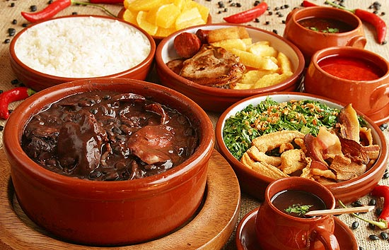

Estas são as minhas tês comidas favoritas:
Torta de Bolacha
Ingredientes:
3 colheres de maisena
5 colheres de chocolate em pó
2 ovos
1 xícara de açúcar
1 lata de leite condensado
1 lata de creme de leite
1 pacote de bolacha maria
1 l de leite e mais um pouco para molhar as bolachas
Modo de Preparo:
1- Em uma panela grande, misture a maisena, o chocolate em pó e o açúcar.2- Coloque o leite aos poucos, para dissolver.
3- Separe os ovos em gema e clara, reserve as claras, misture as gemas em uma xícara e coloque dentro da panela.
4- Por último, coloque o leite condensado e misture bem.
5- Leve ao fogo e mexa de vez em quando.
6- Molhe as bolachas em um pouco de leite, e coloque uma camada de bolacha em um refratário grande até que cubra o fundo.
7- Não deixe a mistura engrossar muito, quando começar a ferver abaixe o fogo e misture até ficar cremosa.
8- Coloque uma camada de creme sobre as bolachas.
9- Repita a operação até a panela ficar vazia.
10- A última camada deve ser a do creme.
11- Bata as claras em neve, adicione as duas colheres de açúcar e bata mais um pouco.
12- Adicione por fim o creme de leite e misture agora com uma colher.
13- Coloque este creme branco sobre a torta.
14- Sirva gelado.
Feijoada
Ingredientes:
1 Kg de feijão preto
100 g de carne seca
70 g de orelha de porco
70 g de rabo de porco
70 g de pé de porco
100 g de costelinha de porco
50 g de lombo de porco
100 g de paio
150 g de linguiça portuguesa
Tempero:
2 cebolas grandes picadinhas1 maço de cebolinha verde picadinha
3 folhas de louro
6 dentes de alho
Pimenta do reino a gosto
1 ou 2 laranjas
40 ml de de pinga
Sal se precisar
Modo de Preparo:
1- Coloque as carnes de molho por 36 horas ou mais, vá trocando a água várias vezes, se for
ambiente quente ou verão, coloque gelo por cima ou em camadas frias.
2- Coloque para cozinhar passo a passo: as carnes duras, em seguida as carnes moles.
3- Quando estiver mole coloque o feijão, e retire as carnes.
4- Finalmente tempere o feijão.
Acompanhamentos:
Couve, arroz branco, laranja, bistecas, farofa, quibebe de abóbora, baião de dois, bacon, torresmo, lingüicinha e caldinho temperado - copinhos.
Tortellini com molho de tomate
Ingredientes:
500g de tortellini
1kg de tomates maduros
1 cebola picada
6 dentes de alho picados
1 colher (sopa) de azeite
Sal a gosto
Pimenta-do-reino a gosto
1 xícara (chá) de manjericão picado
1 colher (sopa) de alecrim picado
Modo de Preparo:
1- Cozinhe o tortellini al dente de acordo com instruções da embalagem.
2- Retire e escorra.
3- Transfira para uma travessa.
4- Ferva uma panela com 2l de água.
5- Retire do fogo.
6- Coloque os tomates dentro por 3min.
7- Escorra e retire as peles dos tomates.
8- Pique com as sementes em pedaços pequenos.
9- Frite, numa panela, a cebola e o alho no azeite até dourar.
10- Junte o tomate, o sal, a pimenta, o manjericão e o alecrim.
11- Deixe ferver por 3min.
12- Derrame o molho sobre o tortellini.
13- Sirva quente.
E essas as comidas que quero experimentar:
Ramen Japonês
Ingredientes:
2 litros de água
3 tabletes de caldo de galinha
1/2 xícara (chá) ou 100 ml de caldo de carne de porco
4 colheres (sopa) de molho shoyu
600 g de macarrão (ideal o chinês para ramen, ou alguma massa mais fina, como cabelo de
anjo)
lombo de porco cozido fatiado
2 colheres (chá) de pó de kombucha (opcional)
broto de bambu em conserva (menmas) a gosto (opcional)
kamaboko (massa de peixe) em fatias a gosto (opcional)
ovos cozidos cortados ao meio, quantidade a gosto (opcional)
sal a gosto
Modo de Preparo:
1- Ferva a água em uma panela grande e acrescente o caldo de galinha, o molho de carne de porco,
o shoyu, o pó de kombucha e o sal.
2- Em seguida, ferva novamente, abaixe o fogo ao máximo possível e prepare o macarrão.
3- Em uma panela separada, coloque uma quantia grande de água ferver e acrescente o
macarrão.
4- Apenas cuide para não ficar muito mole, retire e escoe.
5- Divida então o macarrão em 4 tigelas grandes previamente aquecidas.
6- Em seguida, cubra o macarrão com a sopa (as tigelas são grandes, mas, caso queira, é só por
em pratos convencionais em uma quantia menor).
7- Em cada tigela acrescente a metade ou 2 de ovo cozido e o broto de bambu em conserva,
procurando pô-los delicadamente no centro da tigela.
8- Em seguida, coloque as fatias de carne de porco, de kamaboko e acrescente a pimenta a
gosto.
Ratatouille
Ingredientes:
2 abobrinhas
2 berinjelas
2 cebolas
3 tomates
1 pimentão verde
1 pimentão amarelo
1 pimentão vermelho
azeite a gosto
alecrim a gosto
manjericão a gosto
alho a gosto
sal a gosto
louro a gosto
molho de tomate para cobrir o fundo da forma
Modo de Preparo:
1- Corte os vegetais em rodelas finas sem as sementes.
2- Cubra o fundo de uma forma com o molho de tomate.
3- Monte tudo intercalando com os vegetais.
4- Amasse o alho e espalhe por cima acrescentando o sal e o alecrim a gosto.
5- Regue com um pouco de azeite e cubra com papel-manteiga ou alumínio.
6- Leve ao forno por 40 minutos a uma temperatura de 180° C a 200° C.

Acarajé
Ingredientes:
1 kg de feijão fradinho
4 cebola picadas
Sal a gosto
Azeite de dendê a gosto
Molho:
Pimenta malaguetaAzeite dendê
100 g de camarão
Modo de Preparo:
1- Bata o feijão seco só para quebrar no liquidificador.
2- Coloque de molho em bastante água, por mais ou menos 1 hora e meia para soltar a casca e os
pontinhos pretos.
3- Mude sempre a água e tire a casca e os pontinhos pretos que ficam boiando, escorra a
água.
4- Bata no liquidificador o feijão com as cebolas e o sal.
5- Se precisar, ponha um pouco de água para bater melhor.
6- Coloque a massa em uma vasilha e bata bem para ficar bem macia.
7- Para bater, use uma colher de pau.
8- Acrescente dendê em uma frigideira para esquentar bem.
9- Com uma colher, pegue a massa e coloque para fritar.
10- Depois de frito coloque-os em uma vasilha forrada com papel absorvente.
11- Molho:
12- Machuque umas pimentas malaguetas.
13- Ponha um pouco de dendê para esquentar e frite um pouco as pimentas machucadas.
14- Acrescente o camarão e frite um pouco mais, tire do fogo e misture com um pouco de
vatapá.
15- É maravilhoso, vale apena experimentar.
Não tenho nenhuma celebridade que eu queira muito conhecer, mas a que eu mais respeito é o Hamilton.

Sir Lewis Carl Davidson Hamilton Kt é um automobilista britânico. Sete vezes campeão mundial de Fórmula 1, nos anos de 2008, 2014, 2015, 2017, 2018, 2019 e 2020, Hamilton é um dos maiores pilotos de todos os tempos, e um dos desportistas mais bem sucedidos da história. Atualmente, a representar a equipe Mercedes, Hamilton tem o maior número de vitórias em corridas de Fórmula 1, com 103 triunfos e também é o primeiro em número de títulos mundiais de Fórmula 1, juntamente com Schumacher (7). Detém ainda outros recordes absolutos, como o de maior número de pontos na carreira (4 165,5), o maior número de pole positions (103), maior número de volta lideradas (5 396), o maior número de pódios (183), o maior número de Grand Chelem em uma temporada (3) e o maior número de pontos em uma temporada (413).